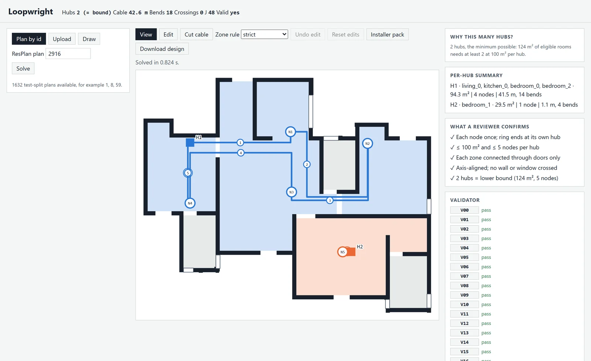

Loopwright
The fewest hubs, then the least cable.
Loopwright plans the network cabling of a home from its floor plan. It groups the rooms into zones, puts one hub in each and runs a single closed ring of cable from that hub through every room in its zone, along the walls and through the doors.

The rules every design follows
Each design has to meet all of these. Within them, Loopwright uses as few hubs and as little cable as it can.
- Rooms
- Every living room, bedroom, kitchen and storage room gets one node. Bathrooms and stairs get none.
- Zones
- Each hub serves one zone of at most 100 m² and five rooms, joined by doors or open passages.
- Rings
- Each hub runs one closed ring through its rooms and back, with no branches.
- Cable
- Runs only horizontally and vertically, changes rooms only through doors and openings, never crosses a wall or a window and stays inside the home.
- Ranking
- Fewest hubs first. Between designs with as many hubs, the lowest J wins: cable length + 0.3 × bends + 3 × crossings + 2 × overlap, with length and overlap in metres.
How it works
Read the plan
Rooms, walls, doors and windows come from the ResPlan geometry, healed so every wall closes and every door sits in a wall.
Place a node in each room
Each node goes by its room's doors and at least half a metre from any wall, so cable reaches it on short legs.
Find the fewest hubs
An exact search over every way of grouping the rooms into zones finds the smallest number of hubs the rules allow.
Keep the cheapest grouping
Among the groupings with that many hubs, the one whose rings need the least cable wins.
Route every ring
Each ring runs on a grid along the walls and through the doors, with every bend counted. Later legs keep out of lanes cable already uses.
Check the result
A separate validator rebuilds the plan from the raw data and checks 17 rules, V00 to V16. It imports nothing from the solver.
One door rule can double the hubs
In plan 16448 the living room and one bedroom already make a 93 m² zone. The kitchen and the other two bedrooms open only onto the living room. If a zone must be joined by its own doors, each of them needs a hub of its own. Let a zone's cable pass through another zone's room and two hubs are enough, the lower bound, though the rings then need three times the cable.
Loopwright follows the own-doors rule unless told otherwise, and the app switches between the two.


- Hubs
- 4
- Lower bound
- 2
- Cable
- 11.2 m
- J
- 18.3
Nodes by the doors, legs in their own lanes
Plan 11282 needs two hubs either way. Earlier versions put each node in the middle of its room and let legs run over each other. Now nodes sit beside the doors and every leg keeps a lane of its own. Drag across the drawing to compare.


Before
- Cable
- 23.3 m
- Doubled up
- 10.7 m
- J
- 47.1
After
- Cable
- 15.8 m
- Doubled up
- 0.0 m
- J
- 19.4
Every plan in ResPlan, all 17,000
Each one solved, then checked by the validator. The figures come from the batch records in the repository.
- Valid
- 16,556 of 16,556feasible plans pass every rule. The other 444 each have a room over 100 m², which no zone can hold, and are reported as infeasible.
- Hubs
- 29,377against a lower bound of 23,893, where a greedy grouping needs 31,046. 12,906 plans meet the bound exactly; on the rest, doors or room sizes rule it out, and the app names the reason.
- Cable
- 323,483 min all, for a total J of 446,668, or 27.0 per plan.
- Time
- 0.38 sper plan at the median and 1.26 s at the 95th percentile, in one process on a laptop.


Every plan, open in the app
loopwright serve opens a local app in the browser. Nothing leaves your machine.

- Any ResPlan plan by its number, under either door rule.
- Your own plan from a PNG, JPEG, PDF or DXF drawing, or drawn on a grid.
- Edits to doors and room types, solved and checked again after each change.
- Cut a leg of any ring and see which way each room is still fed.
- Why this many hubs? names the rule that forces each extra hub.
- Installer pack with the cable schedule, bill of materials and commissioning sheet.
Run it on your machine
You need Python 3.11 or later. The plans download once, about 100 MB, and are checked against a pinned SHA-256.
git clone https://github.com/naithanitanishka20/Loopwright.git cd Loopwright python -m venv .venv .venv\Scripts\python -m pip install -e ".[dev,import,serve]" .venv\Scripts\python scripts\fetch_resplan.py .venv\Scripts\loopwright servegit clone https://github.com/naithanitanishka20/Loopwright.git cd Loopwright python3 -m venv .venv .venv/bin/python -m pip install -e ".[dev,import,serve]" .venv/bin/python scripts/fetch_resplan.py .venv/bin/loopwright serve
Then open 127.0.0.1:8000 in your browser.
.venv\Scripts\loopwright solve --id 2916 --out out\ .venv\Scripts\loopwright validate out\2916.json --id 2916.venv/bin/loopwright solve --id 2916 --out out/ .venv/bin/loopwright validate out/2916.json --id 2916
The first command writes the design as JSON, a drawing, a viewer page and an installer pack; the second runs every check.